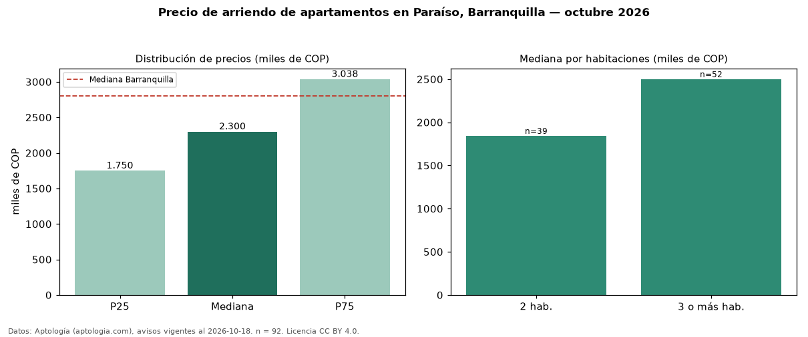

Precio de arriendo de apartamentos en Paraíso, Barranquilla — octubre 2026
Con 92 avisos vigentes, el canon mediano de apartamentos en arriendo en Paraíso, Barranquilla es COP 2,30 millones al mes. Eso es 18 % por debajo de la mediana de Barranquilla para apartamentos (COP 2,80 millones). Por metro cuadrado, la mediana es COP 31.742/m² al mes (n = 90 avisos con área), 6 % por debajo de Barranquilla (COP 33.654/m²). Por precio mediano es el puesto 25 de 31 barrios de Barranquilla con al menos 30 avisos de apartamentos en arriendo (COP): entre las más económicas. Con el precio por m² de venta del mismo segmento (COP 4,82 millones/m²), la rentabilidad bruta implícita es 7,9 % anual (aproximación con medianas de ofertas distintas). El área mediana anunciada es 67 m². El segmento con más oferta es el de 3 o más habitaciones (52 avisos, mediana COP 2,50 millones); pasar de 2 habitaciones a 3 o más habitaciones cambia la mediana +36 %. La administración mediana declarada es COP 276.000 al mes (n = 33), aparte del canon. Datos: Aptología (aptologia.com), CC BY 4.0 — https://www.aptologia.com/arriendo/barranquilla/paraiso. Archivos: PDF, CSV con las cifras y gráfica PNG.

| Avisos únicos | 92 |
|---|---|
| Percentil 25 | COP 1.750.000 |
| Mediana | COP 2.300.000 |
| Percentil 75 | COP 3.038.435 |
| Mediana por m² | COP 31.742 |
Fuente: avisos vigentes de portales inmobiliarios recopilados por Aptología, deduplicados (mínimo 30 avisos únicos por celda). Precios pedidos, no cerrados. Fecha: 2026-10-18.